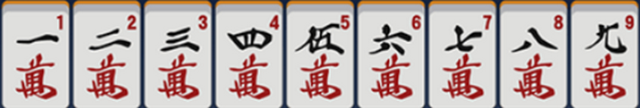

Les tuiles
Un jeu de riichi mahjong est composé de trente-quatre tuiles différentes chacunes en quatre exemplaires. Le but au mahjong est de former une main de quatorze tuiles d'une forme valide.
Il existe quatre familles de tuiles différentes. Les trois familles de base qui sont numérotées de un à neuf.

La famille des pièces (pin)

La famille des bambous (sou)
 A ces tuiles viennent s'ajouter la quatrième famille appellée famille des honneurs. Elle est composé de deux sous familles, les vents et les dragons.
A ces tuiles viennent s'ajouter la quatrième famille appellée famille des honneurs. Elle est composé de deux sous familles, les vents et les dragons.


La main
Une main de départ au mahjong est donc composée de treize tuiles, puis à chaque tour d'un joueur, ce dernier va piocher une tuile regarder si il a gagné et si ce n'est pas le cas, défausser une tuile et passer au tour du joueur suivant.
Le jeu s'effectue dans le sens anti-horaire (ou trigonométrique).

Il existe trois types de groupement de tuiles au mahjong pour réaliser des mains valides :
La suite, composée de trois tuiles consécutives de la même famille.

Le brelan, composé de trois tuiles identiques de la même famille.

La paire, composée de deux tuiles identiques de la même famille.

Pour qu'une main puisse être déclarée comme gagnante, elle doit respecter certaines conditions. Etre composée de quatre groupes de trois (brelan ou suite) et d'une paire.